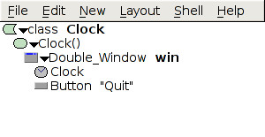
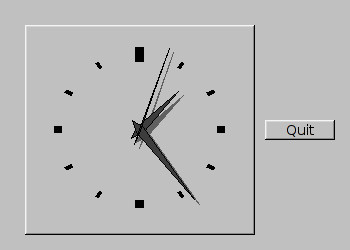

What are events and callbacks? Describe an example. [3]
An event is an action, usually triggered by the user: e.g., clicking on a
button, selecting a menu item, pressing Enter, moving the mouse. A callback
is a procedure/function
invoked when a corresponding event happens. For example, the exit() function
might be run when the user clicks on a "Quit" button.
Below is a screenshot of the Fluid design for a small FLTK application
that just shows a clock (using the Fl_Clock widget). The callback code for the
"Quit" button is: o->window->hide(). There are no other files
in this project. Will this project compile and run properly? If not, what is
the problem, and how would you fix it? [4]


The CubeView tutorial example in Lab0 had three C++ files:
CubeView.cxx, CubeMain.cxx, and CubeViewUI.cxx. Why have three files?
Contrast their purposes. [3]
CubeMain was very small, just had the main() function and kicked off an
instance of CubeViewUI. CubeViewUI was generated by fluid, and just contained
the user interface widgets. The primary functionality was in CubeView.cxx, in
a class that was used/instantiated by CubeViewUI.
Describe a complete human-computer interface other than our standard
keyboard, monitor, mouse/touchpad/etc. Describe an application for which this
interface might be better-suited than our traditional interface. [4]
Describe at least four applications well-suited to parallel computing.
[4]
Weather modelling, computational fluid dynamics, metallurgy, modelling a
nuclear blast without actually setting one off, aircraft design, protein
folding, off-line 3D rendering, large-scale satellite image analysis, large
websites, data mining, etc.
Describe the vonNeumann model of computing. [3]
A computer processes input data according to input
instructions, and produces output results.
The computer's memory can store both the input data as well as the instructions.
Describe Flynn's taxonomy of parallel computing.
(Give more detail than just expanding the acronyms!) [8]
Define and contrast latency vs. bandwidth. [4]
Describe the three parallel programming (API) models we discussed in
class, and name an example API for each. (The fourth programming model we
talked about is hybrids of these three.) [6]
Message passing: threads communicate by sending messages to each other.
MPI.
Data parallelism: each thread performs same work in parallel on a
different chunk of the data. HPF.
Compare the pros/cons of OpenMP vs. MPI. [5]
OpenMP uses the threading model instead of the message-passing model, is easier
to program in and easier to add-on to existing serial code. The programmer
need not know how many processors the program is actually using. It is generally
more well-suited to a shared-memory model. MPI is more complex to program in
but provides more control over synchronization and communication. MPI often
scales up better to more processors; it is more appropriate for
distributed-memory models.
Describe the (1) shared, (2) distributed, and (3) hybrid
memory models of
parallel computing. Draw the diagrams illustrating how memory and processors
are tied together. What are the advantages/disadvantages of shared memory vs.
distributed memory models? [6]
Write a complete OpenMP C/C++ procedure to do the dot-product
of two float arrays of the same length: [6] float dotproduct(int len, float vec1[], float vec2[]) {
Attached is a printout of CBC's
frontpage (2 pages). Critique their user interface design: good points and
bad points. Bear in mind that this is a static printout of a website.
Be as detailed as you can, and cite specific examples. You may wish to
circle items on the printout.
[8]